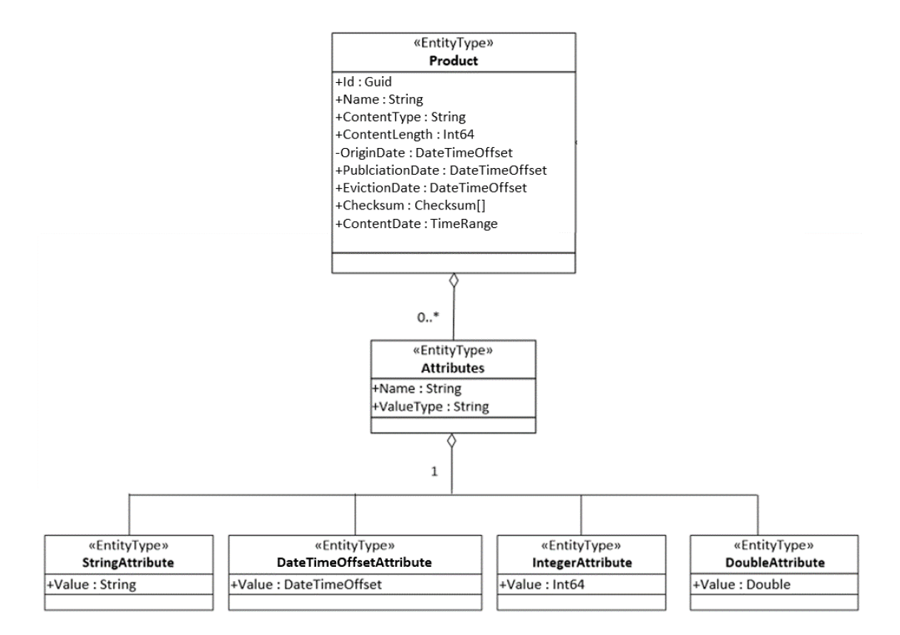

| Description | Version | Date |
|---|---|---|
| Creation | 1.0 | 15/12/2020 |
| Update | 1.1 | 02/04/2021 |
| AuxIP-V1 | 1.2 | 08/04/2021 |
| Correction on authentication | 1.3 | 15/04/2021 |
| Update | 1.4 | 08/06/2021 |
| Improvements | 1.5 | 25/11/2021 |
| Correction on parallel download limit | 1.6 | 15/09/2022 |
Table of Content
2.3.2 Via Curl and Python for Developers 7
3.2 Product Entity Data Model 10
3.3.1 Filtering query function 12
3.3.6 Query response content 15
3.4.1 Subscription Create: Example Request: 16
3.4.2 Subscription Create: Example Response (JSON format): 16
3.4.3 Example Subscription Notification: 16
4. Postman Testing Collection 18
5. Appendix A : ODATA metadata 19
6. Appendix B : getBaseline Tool 21
This document details the entry points for the AUXIP API. It gives the summary of the data access through an OData V4 format.
RD-1 OData Documentation http://www.odata.org/documentation
RD-2 OData Protocol http://docs.oasis-open.org/odata/odata/v4.01/odata-v4.01-part1-protocol.html
AD-1 Auxiliary Data Interface Delivery Point Specification
| Acronym | Signification |
|---|---|
| ADF | Auxiliary Data Files used in a EO processing chain |
| API | Application Programming Interface (a set of functions and procedures allowing the creation or modification of applications that access the features or data of an operating system) |
| UUID | Universally Unique Identifier – Allows to identify an instance |
| JSON | JavaScript Object Notation, commonly used format in internet services |
| URI | Uniform Resource Identifier |
As a part of the Reprocessing Reference Preparation Package, AUXIP API can be accessed via the following URL:
https://reprocessing-auxiliary.copernicus.eu/auxip.svc
New users of AUXIP API should be registered first in order to be able to use the API and request for the accessToken. In a browser, the user can only create the account with username and password; nothing else can be performed in a browser. The username and password are created to be used for the token access.
|
|---|
Figure 1 : Registration Interface
To get the AUXIP API token for a client, an HTTP POST request should be sent to the following Token resource:
In the post body, username and password are specified in JSON format, and the response body contains a token key with an actual API Token as the value. The token should be used in an HTTP Authorization header while communicating with the AUXIP service.
It is necessary to get a token using a tool (a browser or any other application that can send http requests). Depending on the client that is used, there are different ways to send HTTP headers.
The next sections cover the following examples:
Sending requests via Postman
Curl
Python

Figure 2 : Getting New Access Token via Postman
To be able to send requests via Postman, one should configure the authorization settings first, as showing in the above steps:
Steps 2 and 3 : choose authorization via OAuth 2.0
Steps 4 to 7 :
Access Token URL : set the resource where to post for the accessToken,
Client ID : should be set to “reprocessing-preparation”
Username and Password : Client credentials from the registration.
Scope : openid
Step 8 : Get New Access Token
After that, the user should click on “Use Token” and “Save” the collection. The user can use the request service in Postman during the validity time of the token (10min).
Curl
RAWTKN=$(curl -s -X POST \
-H "Content-Type: application/x-www-form-urlencoded" \
-d "username="$USER \
-d "password="$PASSWORD \
-d 'grant_type=password' \
-d "client_id=reprocessing-preparation" \
https://reprocessing-auxiliary.copernicus.eu/auth/realms/reprocessing-preparation/protocol/openid-connect/token \
|jq . )
TOKEN=$(echo $RAWTKN | jq -r '.access_token')
echo "Token to be used to access to the service : ${TOKEN} "
Python
import requests
def get_token_info(user,password):
headers = {'Content-Type': 'application/x-www-form-urlencoded'}
data={"username":user, "password":password,"client_id":" reprocessing-preparation","grant_type":"password"}
token_endpoint="https://reprocessing-auxiliary.copernicus.eu/auth/realms/reprocessing-preparation/protocol/openid-connect/token"
token_endpoint="https://reprocessing-auxiliary.copernicus.eu/auth/realms/reprocessing-preparation/protocol/openid-connect/token"
response = requests.post(token_endpoint,data=data,headers=headers)
return response.json()
All registered clients must have one or more roles assigned. The roles available for assignment to clients are:
Download for client services
The client may perform queries on the products available at the AUXIP and perform downloads and can also create Subscriptions in order to be notified for newly arrived products in the AUXIP service.
Administration Services
(Monitoring &) Reporting – monitoring and reporting functionality, including the permission to perform queries on all properties.
By default a download role is assigned to all new created clients.
Roles and Users can be managed via the AUXIP administration interface in https://reprocessing-auxiliary.copernicus.eu/auth
AUXIP requests are limited by a quota mechanism applicable to all clients with the ‘Download’ role; this mechanism is configured as follows:
Maximum volume (in GB) transfer within the defined period
quota.total_downloads = 1000
Period to be considered while counting downloaded volumes
quota.total_downloads_period_in_days = 8
Maximum number of separate downloads which can be performed in parallel
quota.parallel_downloads = 5
Delta time between two consecutive downloads in seconds
quota.parallel_downloads_deltatime_in_seconds = 10
Note that “Parallel downloads” are understood in AUXIP service as consecutive downloads with the delta time between them is less than the setting threshold quota.parallel_downloads_deltatime_in_seconds
For all services, a GET request should not exceed 2000 characters and the result is limited to 200 filenames (the “skip” parameter can be used to get the following results).
The AUXIP access point allows to visualize and to retrieve the ADF needed for a reprocessing performance of Sentinel-1, Sentinel-2 and Sentinel-3 Level-1 or Level-2 data. There are three tables:
“Products“ contains all ADF products with their respective information
“Subscriptions” contains the subscriptions
“Users” contains the users and their roles
“Metrics” contains the metrics of the service (only seen by user with the ‘Reporting’ role).
These tables can be queried using all the Odata standard functions. Some specific functions to retrieve the list for specified parameters are also available.
Interface is designed using an OData web service and secured through an OAuth 2.0 gateway.
Use case is extracted from the [AD-1] document.
The nominal use scenario for discovery and download of products from the AUXIP is shown in the figure below.
Figure 3 : Use Case Scenario
In the first step, an AUXIP client uses the API to request a list of products currently available for download from the AUXIP by sending a GET Products List Query. As AUXIP clients are in general systematic downloaders of Sentinel ADF products, these requests are sent regularly to ensure that a complete picture of all relevant published products is maintained at client level. The query can include a filter by the content of the product name, and by publication time. Time range filtering examples include:
All products published after a certain date-time. Likely to be used for more regular requests, to discover the products published in the time interval since the previous request.
All products published in a certain date-time range (start/stop). For example, a client that prioritizes download of latest data uses date-time ranges to download.
All products (no time limit).
In response, the AUXIP uses the GET Products List Response to provide the user with the requested list of products. For each product on the list, a limited set of product property metadata is provided. These metadata are intended to give the client a partial picture of each product to assist in retrieval. Fields include: Product ID (logical file identifier), Product Name, Content Length (size of the downloadable file), Publication (Creation) Date, Eviction Date (time period for which data will remain on AUXIP before deletion), Checksums (algorithm, value and date) and Content Date (product start and stop times).
Following receipt of the GET Products List Response, the AUXIP user can optionally check if any of the products reported in the list have already been retrieved. Then, Product Download Requests are sent to the AUXIP via the API for the required products. Products are downloaded in the pre-defined packages for the product type. (Remark : Download is not available in AUXIP V0)
Requests are limited by a quota mechanism, e.g. limiting the user to a maximum number of connections in parallel.
Product entity data model is extracted from the [AD-1] document.
The V0 has a difference on the attribute list. The current framework does not allow polymorphism on entity thus it cannot match StringAttributes to its mother class Attributes thus there is a list for each attribute type.
This is corrected in V1.
The figure below shows the AUXIP basic Product Entity model.

Figure 4 : Product Entity Data Model
| Product Properties | Type | Mandatory | Description | Example |
|---|---|---|---|---|
| Id | GUUID | Y | It is a universally unique identifier (UUID). The Id is a local identifier for the product instance within the AUXIP, assigned by the service managing the AUXIP. | 2b17b57d-fff4-4645-b539-91f305c27c69 |
| Name | String | Y | Data file name | S2__OPER_AUX_ECMWFD_PDMC_20190216T120000_V20190217T090000_20190217T210000.TGZ |
| ContentType | String | Y | The Mime type of the product | application/octet-stream |
| ContentLength | Int64 | Y | Actual size in bytes (B) of the downloadable file | 8326253 |
| OriginDate | DateTimeOffset | Y | Date and time of the product availability at the source. Time is in UTC in the format YYYY-MM-DDThh:mm:ss.sssZ | 2018-01-17T12:56:05.232Z |
| PublicationDate | DateTimeOffset | Y | Publication date and time of the data file (time at which the file becomes visible to the user). Time is in UTC in the format YYYY-MM-DDThh:mm:ss.sssZ | 2018-01-17T12:56:05.232Z |
| EvictionDate | DateTimeOffset | N | Date when the data file will be removed from the rolling repository. Time is in UTC in the format YYYY-MM-DDThh:mm:ss.sssZ The EvictionDate is optional but should be provided if a rolling policy is in place. |
2018-01-17T12:56:05.232Z |
| Checksums | Checksum() | Y | Represents the known checksums for the product’s physical date, providing a unique value for supporting download integrity check. At least MD5 checksum, including ChecksumDate, is mandatory. | "Checksum": [ { "Algorithm":"MD5", "Value":"E8A303BF3D85200 514F727DB60E7DB65" "ChecksumDate":"2019-02-16T12:00:00.000Z", } ] |
| ContentDate | TimeRange() | Y | The validity date range period. Start and stop dates are in UTC in the format YYYY-MM-DDThh:mm:ss.sssZ | "ContentDate": { "Start":"2019-02-17T09:00:00.000Z", "End":"2019-02-17T21:00:00.000Z" } |
| Attributes | List(Attribute) | Y | List of string/integer/double/datetime attributes (see attributes definitions) | " Attributes ": [ { "Name":"ShortName", "ValueType":"String" "Value":"GIPP_OLQCPA" } … ] |
The service naturally supports all the intrinsic OData requests.
The OData “filter” query is a very versatile query that allows a substancial number of possibilities on attributes such as:
Startswith (startswith) : attribute target starts with the given sequence in parameters
Contains (contains) : attribute target contains the given sequence in parameters
Endswith (endswith) : attribute target ends with the given sequence in parameters
Greater than (gt) : attribute target is greater than given sequence in parameters, comparison is type-wise
Less than (lt) : attribute target is lesser than given sequence in parameters, comparison is type-wise
These are applicable on any attribute type that can be compared: time, number, strings. They also can be mixed with “and” or “or” in order to have more possibilities.
Here are some examples extracted from [AD-1]:
The list of products starting with the filename “S1A_AUX_” can be retrieved as follows: https://<service-root-uri>/auxip.svc/Products?$filter=startswith(Name,'S1A_AUX_')
The following query returns all products containing “S2__OPER_AUX_UT1UTC” : https://<service-root-uri>/auxip.svc/Products?$filter=contains(Name,' S2__OPER_AUX_UT1UTC ')
The list of products published in the AUXIP since a reference time: https://<service-root-uri>/auxip.svc/Products?$filter=PublicationDate gt 2020-05-15T00:00:00.000Z
The list of products filtered by validity date criteria can be retrieved for example as follows: https://<service-root-uri>/auxip.svc/Products?$filter=ContentDate/Start gt 2019-05-15T00:00:00.000Z and ContentDate/End lt 2019-05-16T00:00:00.000Z
It is possible to query all the products with a particular attribute name and value using the query:
https://<service-root-uri>/auxip.svc/Products?$expand=Attributes&$filter=Attributes/OData.CSC.StringAttribute/any(att:att/Name eq '$NAME' and att/OData.CSC.StringAttribute/Value eq '$VALUE')
A combination of attributes is also possible:
https://<service-root-uri>/auxip.svc/Products?$filter=Attributes/OData.CSC.StringAttribute/any(att:att/Name eq 'productType' and att/OData.CSC.StringAttribute/Value eq 'AUX_ECMWFD') and Attributes/OData.CSC.StringAttribute/any(att:att/Name eq 'platformShortName' and att/OData.CSC.StringAttribute/Value eq 'SENTINEL-2')
Query functions is supported on all properties of the Product according to the OData $filter query option. Results ordering function is supported according to the $orderby option; result paging function is supported according to the $top, $skip and $count options, with the page size configurable to support at least 1000 returned results per page. More details on these options are provided below.
$orderby
The $orderby system query option allows clients to request resources in either ascending order using ‘asc’ or descending order using ‘desc’. If ‘asc’ or ‘desc’ not specified, then the resources will be ordered in ascending order.
For example: https://<service-root-uri>/auxip.svc/Products?$orderby=PublicationDate desc
returns a list of products ordered by PublicationDate in descending order.
$top
The $top system query option allows clients to specify the maximum (non-negative integer) number of items returned from a query. In the case of the AUXIP, $stop accepts a maximum value of 1000.
For example: https://<service-root-uri>/auxip.svc/Products$top=1000&$filter=startswith(Name,'S2')
returns the first 1000 Sentinel-2 Auxiliary products currently available on the AUXIP.
$skip
The $skip system query option allows clients to specify a (non-negative integer) number of items excluded from the start of a query result, i.e. the query starts returning items from the provided integer+1.
For example: https://<service-root-uri>/auxip.svc/Products$skip=100&$filter=startswith(Name,'S2')
returns all Sentinel-2 ADF products currently available on the AUXIP, excluding the first 100.
$top and $skip are often applied together; in this case $skip is always applied first regardless of the order in which they appear in the query.
$count
The $count system query option allows clients to request a count of the matching resources included with the resources in the response: the number of the matching resources is returned as result.
The $count query option is useful to know the number of entities which are identified by the resource path section of the URI after having applied some filters.
For example: https://<service-root-uri>/auxip.svc/Products$count=true&$filter=startswith(Name,'S2')
returns the number of Sentinel-2 products currently available on the AUXIP.
Giving the number of elements in the database exporting the full catalog is not possible. Thus a snapshot of the database is available in an HTTP access with BasicAuth at : https://<service-root-uri>/archives/
The structure is as follows:
[SSS]: Satellite Platform short name, 3 characters (e.g. S1_, S1A, S2A, …)
[YYYY]: Validity Year, 4 digits (e.g. 2014, 2015, …)
[MM]: Validity Month, 2 digits (e.g. 01, 02, …)
The month folder contains the set of exported files. There is a data file for each day of the month.
Each data file lists the products having the same 'validity start' date.
The exported file naming convention and format is:
<SSS>_<YYYYMMDD>_<AUX>_<XYZ>_catalogue_<yyyymmddhhmmss>.json
where:
<SSS> 3 characters corresponding to the satellite platform short name S1_, S1A, S1B, S2A etc.
<YYYYMMDD> 8 digits corresponding to the validity start date of all the products listed in the file
<AUX>_<XYZ> 7 characters corresponding to the Auxiliary system, where XYZ represents the AUX provider:
ADG = Aux Data Gathering
POD = Precise Orbit Determination
C-V = Cal/Val3
<yyyymmddhhmmss> 14 digits corresponding to the year, month, day and UTC time of the catalogue snapshot. The products listed in the exported file are those that have been published in the AUXIP up until this date.
The frequency of the snapshot could be e.g. nightly.
Product download over the OData API is initiated using the ‘Id’ for each product returned in the GET Products List Response. The correct URI for the download of a single product is:
https://<service-root-uri>/auxip.svc/Products(Id)/$value
Where Id is the UUID assigned per product.
The query response is contained in the GET HTTP response. The default format is XML but if the label “content-type” equals “application/json” the result is in JSON format.
HTTP error responses are the classical HTTP errors:
| Error Code | Signification |
|---|---|
| 200 | Accepted, response given |
| 400 | Bad request |
| 401 | Unauthorized (sent by the authentication gateway) |
| 404 | Not found |
| 500 | Internal Server error |
The Subscription function allows the request for automated notifications of new products entering the AUXIP, according to a set of filter parameters supplied within the subscription request. Once the notification has been received, the client can request the download of the product.
The nominal scenario can be described in the following steps:
STEP 1 – Subscription Creation
The scenario is initiated by an AUXIP client submitting a create subscription request to the AUXIP service. The request contains the filter parameters of the subscription (product types, time range, etc.) and a NotificationEndpoint to which product download notifications will be sent. The request is processed by the AUXIP service, and a response is returned, which includes a unique identifier for the particular subscription request, a status (initially running), the filter parameters and the submission date/time of the request.
STEP 2 – Product Notification and Product Retrieval
For each subscription with status running, the AUXIP identifies new products matching the provided filter criteria. Upon identification, the AUXIP sends a notification of product availability to the NotificationEndpoint provided, containing the product ID, the product name, the subscription ID and the notification date. The client is then free to submit a product Download Request to trigger the download of the product.
- A subscription continues to identify products matching the filter parameters until it is paused or cancelled.
- In case the client endpoint is unavailable and the subscription notification fails, there is no retry.
POST http://<service-root-uri>/odata/v1/Subscriptions { "@odata.context": "$metadata#Subscription/$entity", "FilterParam": "Products?$filter=contains(Name,'_AUX_ECMWFD_')and PublicationDate gt 2019-02-01T00:00:00.000Z and PublicationDate lt 2019-09-01T00:00:00.000Z", "NotificationEndpoint": "https://myservice/notification", "NotificationEpUsername": "myserviceuser", "NotificationEpPassword": "**********", } |
|---|
HTTP/1.1 201 Created { “@odata.context”: ”$metadata#OData.CSC.Subscription”, “Id”: ”2b17b57d-fff4-4645-b539-91f305c27e11”, “Status”: ”running”, "FilterParam": "Products?$filter=contains(Name,'_AUX_ECMWFD_')and PublicationDate gt 2019-02-01T00:00:00.000Z and PublicationDate lt 2019-09-01T00:00:00.000Z", “SubmissionDate”: ”2019-01-27T18:25:30.000Z”, "NotificationEndpoint": "https://myservice/notification", } |
|---|
POST http://myservice/notification { "@odata.context": "$metadata#Notification/$entity", "ProductId": "e872683a-ea5b-455d-bfb2-fb304cbfbacb", "ProductName": " S2__OPER_AUX_ECMWFD_PDMC_20190216T120000_V20190217T090000_20190217T210000", “SubscriptionId”: ”2b17b57d-fff4-4645-b539-91f305c27e11”, “NotificationDate”: ”2019-02-16T12:18:09.000Z”, } |
|---|
Various metric parameters are available at https://<service-root-uri>/auxip.svc/Metrics
They give information on the database content and users.
Please note that the reporting role is needed to access this API.
A postman collection is provided along with this document to test the various query possibilities on the service including $filter/$top/$skip filters and ADF download. Here is the import/use procedure.
First import the test collection within postman:
Figure 5 : import button
And fill the necessary variables:
Figure 6 : Postman variables
All the user should be registered through the OAuth2 portal by typing the address of the service in an internet navigator and filling the necessary fields, see §2. Client Administration.
Then all the requests to the API are granted according to the role of the user. By default, the role is “Download”; if the user needs to access metrics, its role should be modified in the admin page:
https://reprocessing-preparation.ml/auth
<?xml version="1.0" encoding="UTF-8"?> <edmx:Edmx xmlns:edmx="http://docs.oasis-open.org/odata/ns/edmx" Version="4.0"> <edmx:DataServices> <Schema xmlns="http://docs.oasis-open.org/odata/ns/edm" Namespace="OData.CSC"> <EntityType Name="Product"> <Key> <PropertyRef Name="Id"/> </Key> <Property Name="Id" Type="Edm.Guid" Nullable="true"/> <Property Name="Name" Type="Edm.String" Nullable="true"/> <Property Name="ContentType" Type="Edm.String" Nullable="true"/> <Property Name="ContentLength" Type="Edm.Int64" Nullable="true"/> <Property Name="OriginDate" Type="Edm.DateTimeOffset" Nullable="true"/> <Property Name="PublicationDate" Type="Edm.DateTimeOffset" Nullable="true"/> <Property Name="EvictionDate" Type="Edm.DateTimeOffset" Nullable="true"/> <Property Name="Checksum" Type="Collection(OData.CSC.Checksum)" Nullable="false"/> <Property Name="ContentDate" Type="OData.CSC.TimeRange" Nullable="false"/> <Property Name="StringAttributes" Type="Collection(OData.CSC.StringAttribute)" Nullable="true"/> <Property Name="IntegerAttributes" Type="Collection(OData.CSC.IntegerAttribute)" Nullable="true"/> <Property Name="DoubleAttributes" Type="Collection(OData.CSC.DoubleAttribute)" Nullable="true"/> <Property Name="DateTimeOffsetAttributes" Type="Collection(OData.CSC.DateTimeOffsetAttribute)" Nullable="true"/> </EntityType> <EntityType Name="Subscription"> <Key> <PropertyRef Name="Id"/> </Key> <Property Name="Id" Type="Edm.Guid" Nullable="true"/> <Property Name="Status" Type="OData.CSC.SubscriptionStatus" Nullable="true"/> <Property Name="SubscriptionEvent" Type="OData.CSC.SubscriptionEvent" Nullable="true"/> <Property Name="FilterParam" Type="Edm.String" Nullable="true"/> <Property Name="ContentLength" Type="Edm.Int64" Nullable="true"/> <Property Name="SubmissionDate" Type="Edm.DateTimeOffset" Nullable="true"/> <Property Name="LastNotificationDate" Type="Edm.DateTimeOffset" Nullable="true"/> </EntityType> <EntityType Name="Metric"> <Key> <PropertyRef Name="Name"/> </Key> <Property Name="Name" Type="Edm.String" Nullable="true"/> <Property Name="Timestamp" Type="Edm.DateTimeOffset" Nullable="true"/> <Property Name="MetricType" Type="OData.CSC.EnumType" Nullable="true"/> <Property Name="Gauge" Type="Edm.String" Nullable="true"/> <Property Name="Counter" Type="Edm.Int64" Nullable="true"/> </EntityType> <ComplexType Name="DateTimeOffsetAttribute"> <Property Name="Name" Type="Edm.String" Nullable="false"/> <Property Name="ValueType" Type="Edm.String" Nullable="false"/> <Property Name="Value" Type="Edm.DateTimeOffset" Nullable="false"/> </ComplexType> <ComplexType Name="Attribute" Abstract="true"> <Property Name="Name" Type="Edm.String" Nullable="false"/> <Property Name="ValueType" Type="Edm.String" Nullable="false"/> </ComplexType> <ComplexType Name="StringAttribute"> <Property Name="Name" Type="Edm.String" Nullable="false"/> <Property Name="ValueType" Type="Edm.String" Nullable="false"/> <Property Name="Value" Type="Edm.String" Nullable="false"/> </ComplexType> <ComplexType Name="IntegerAttribute"> <Property Name="Name" Type="Edm.String" Nullable="false"/> <Property Name="ValueType" Type="Edm.String" Nullable="false"/> <Property Name="Value" Type="Edm.Int64" Nullable="false"/> </ComplexType> <ComplexType Name="DoubleAttribute"> <Property Name="Name" Type="Edm.String" Nullable="false"/> <Property Name="ValueType" Type="Edm.String" Nullable="false"/> <Property Name="Value" Type="Edm.Double" Nullable="false"/> </ComplexType> <ComplexType Name="Checksum"> <Property Name="Algorithm" Type="Edm.String" Nullable="true"/> <Property Name="Value" Type="Edm.String" Nullable="true"/> <Property Name="ChecksumDate" Type="Edm.DateTimeOffset" Nullable="true"/> </ComplexType> <ComplexType Name="Property"> <Property Name="Name" Type="Edm.String" Nullable="true"/> <Property Name="Value" Type="Edm.String" Nullable="true"/> </ComplexType> <ComplexType Name="TimeRange"> <Property Name="Start" Type="Edm.DateTimeOffset" Nullable="false"/> <Property Name="End" Type="Edm.DateTimeOffset" Nullable="false"/> </ComplexType> <EnumType Name="SubscriptionStatus"> <Member Name="running"/> <Member Name="paused"/> <Member Name="cancelled"/> </EnumType> <EnumType Name="SubscriptionEvent"> <Member Name="created"/> <Member Name="deleted"/> </EnumType> <EnumType Name="EnumType"> <Member Name="Gauge"/> <Member Name="counter"/> </EnumType> <EntityContainer Name="Container"> <EntitySet Name="Products" EntityType="OData.CSC.Product"/> <EntitySet Name="Subscriptions" EntityType="OData.CSC.Subscription"/> <EntitySet Name="Metrics" EntityType="OData.CSC.Metric"/> </EntityContainer> </Schema> </edmx:DataServices> </edmx:Edmx> |
|---|
A tool to retrieve a list of baseline files is available in the source code repository under the Utilities/getBaseline.py file.
The usage of the script is given here:
getBaseline.py [-h] -u USER -pw PASSWORD -m MISSION -t0 START -t1 STOP [-su UNIT] [-c CONTAINS] [-e EXCLUDE] [-d DOWNLOAD]
Where :
USER : is the user login registered on the Oauth2 service
PASSWORD : is the user password of the user
MISSION : is the mission to request for (S2MSI, S1SAR, S3OLCI, S3MWR, S3ALL, S3SRAL, S3SYN, S3SLSTR)
START : is the SensingTimeStart to search for on the format '2018-05-02T12:00:30Z'
STOP : is the SensingTimeStop to search for on the format '2018-05-02T12:00:30Z'
UNIT : is the satellite unit ( A or B ) [Optional]
CONTAINS : is an additional filter to match on the ADF names [Optional]
EXCLUDE : is an additional filter to exclude file names [Optional]
DOWNLOAD : By default getBaseline tool only lists all auxiliary data files matching the request, use '-d true' option to download the listed files.
The list of files is the result of the function call to reprocessing.svc/GetReproBaselineNamesForPeriod on the reprocessing service, then the AUXIP database is questioned to get the path to the file in the online storage.